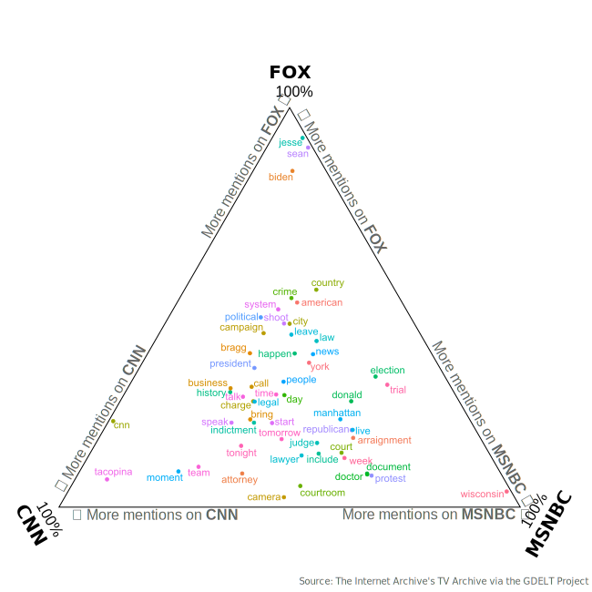

Cable News Coverage of the NY Trump Arraignment
A deep dive in content analysis
The Indictment & Arraignment
During Fmr. Pres. Donald Trump’s initial bid for the White House in 2016, he allegedly paid “hush money” to Stormy Daniels so as to prevent the affair story from leaking to the press. In doing so, it could be considered a federal crime - violation of campaign finance rules, since the entire alleged effort was in support of his campaign.
Specifically, he faced 34 counts of falsifying business records in the first degree. Of course, this is huge news, and as such, all the major news networks were following the indictment and arrest of a former president. During the legal process, no cameras were allowed inside the courtroom, so most of the networks filled the air with discussion and analysis; however, each network’s coverage was not at all the same.
The Stratification of Cable News
Legal proceedings can be very dry, and an overall extremely boring affair. Not to mention federal trials, which disallow cameras in the courtrooms - so there is quite literally nothing to see.
As alluded to above, to fill the air, news networks had to turn to analysts, experts and pundits. Of course, these folks all have different backgrounds, areas of interest - and perhaps most importantly, differing political slants. Shortly, we will see how the coverage taken by the big three cable networks (CNN, MSNBC and FOX News) all covered the same events quite differently.
However, the differences between cable news networks isn’t really news in and of itself - just about anyone can go on and on about the partisan news media and its many shortcomings. This is true, to some extent; however, there is an indisputable value of news coverage, regardless of the slant it may have.
If a news source is political, all that means is different varieties of coverage ought to be consumed to account for any shortcoming that one network or source may present. That said - enough of the philosophy of news networks and strategy - let’s dive into the similarities and differences in cable news network coverage of the NY Trump Arraignment.
Arraignment Coverage
Certain words that are used can be very revealing about a network’s coverage - especially if they differ greatly from the other networks.
In my analysis, I aggregated all of the closed captions from CNN, FOX and MSNBC between the hours of 7 p.m. and 3 a.m. ET. In the industry, this time period is often referred to as Sales Prime, which is the block of coverage which sees the largest audiences across the board (it extends late in order to capture the West Coast too).
As a reminder, for each 10-minute block (since that is the granularity of data provided by the GDELT Project), any time the word “Trump” was said, all the words in that block were included. This way, the words most commonly said around “Trump” will be considered. These adjacent words were then lemmatized (cleaned and grouped) and fuzzily combined across networks to find the 200 most common mentions.
The top words per network are plotted below:

So what does this mean?
Let’s start at the top, and work our way around clockwise, beginning with:
Fox News
The words clustering towards the top of this section do not differ greatly from something you may see on any other night. This leads me to believe that the coverage during prime time was not nearly as specialized on Fox News as it was on the other two networks.
At the very top of the list are two anchor names (Jesse Waters and Sean Hannity), but also Joe Biden. Clearly, much of the coverage that involved Trump also involved references to the current president. It is a little hard to tell the context surrounding some of these uses; however, it is quite clear that comparisons were being made between the two.
Based on other events happening around the same time, I would suggest that most of the coverage on Fox News revolved around the failings of the current president, as opposed to the alleged crimes of the former one.
MSNBC
MSNBC’s coverage was much more directed around the actual arraignment and indictment of Fmr. Pres. Trump; however, the most common word was “Wisconsin” - which was a totally different story.
It just so happened that the day following the arraignment of Trump was a state supreme court election in Wisconsin - which could have huge impacts down the line for the purple state. You can even see that the word “election” is far down and right towards the MSNBC corner, which makes total sense. That said, MSNBC’s coverage of the upcoming election must’ve been deeply tied to Trump, since the state was mentioned so often in tandem with the former president’s name.
Outside of the Wisconsin saga, there were many oblique references to the arraignment, including “Manhattan” (site of the courthouse), “judge”, “trial”, etc. Most interestingly is the word “Republican”, which is drifting towards the side of MSNBC, indicating that their coverage tended to be slightly more partisan than that of CNN, which also split usage of the word.
CNN
Similar to MSNBC, CNN’s coverage was largely focused on the arraignment itself. Most unique is the word “Tacopina”, which is the name of one of Trump’s lawyers. This speaks to the angle of coverage - where MSNBC might have covered the generalities of the arraignment, whereas CNN dove in the specifics of the legal team, arraignment process, etc.
Additionally, other top unique words include “CNN” and “team”, which indicates a definite focus on live, team coverage of the event. This lines up with what I already know of the network - it prides itself on breaking news and live coverage.
Other than the team-focused words, CNN’s coverage largely matches up with that of MSNBC - which doesn’t come as all that much of a surprise. After all, both have largely democratic leaning audiences (though, on aggregate, MSNBC does tend to drift farther left).
Overall, the coverage was really divided into two camps: arraignment-related (CNN, MSNBC) and non-arraignment-related (MSNBC, Fox News). MSNBC straddles the line - both focusing on the arraignment as well as the Wisconsin election.
The fewer words that are clustered around the center, the more stratified the coverage has become. Hopefully, as we move forward with the trial, the words that the cable news networks use to describe Trump and his legal proceedings can re-coalesce around the center of the triangle - indicating a return to normalized coverage.
-CH